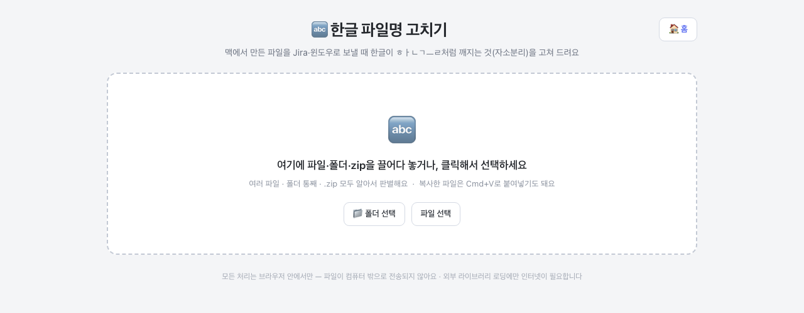

같은 한글.txt라도, 맥은 파일 이름을 ㅎ+ㅏ+ㄴ+ㄱ+ㅡ+ㄹ처럼 자음·모음 조각으로 풀어서 저장해요.
맥 안에서는 알아서 합쳐 보여주니까 티가 안 나는데, 윈도우·Jira는 완성된 글자를 기대하기 때문에
조각을 그대로 보여줘서 ㅎㅏㄴㄱㅡㄹ.txt처럼 깨져 보이는 거예요. 이걸 자소분리라고 부릅니다.
파일이 고장난 게 아니라 이름 표기 방식만 다른 것이라, 이름을 "완성된 글자" 방식으로 다시 써 주면 끝나요. 이 도구가 그 일을 해 줍니다.
파일 여러 개, 폴더 통째, .zip 모두 알아서 판별해요. 폴더는 [폴더 선택] 버튼으로 고를 수도 있고, 복사해 둔 파일은 Cmd+V 붙여넣기로도 넣을 수 있어요. zip을 넣으면 압축을 풀지 않고 내부 파일명까지 들여다봅니다.

넣자마자 이름을 하나씩 검사해서 표로 보여줘요.
· 빨간 하이라이트 + "자소분리됨" — 윈도우·Jira에서 깨져 보일 이름이에요. 오른쪽에 고친 이름이 미리 보여요.
· "정상" — 그대로 보내도 안 깨지는 이름이에요. 전부 정상이면 "이미 정상이에요" 안내가 떠요.
· zip은 제목 줄에 파일명 인코딩도 표시해요 — "UTF-8(맥 표준)", "EUC-KR(윈도우 구형)"처럼 어떤 방식으로 저장됐는지 알려줍니다.
맥에서 압축한 zip에 몰래 들어가는 시스템 파일(__MACOSX 폴더, ._로 시작하는 파일, .DS_Store)은
자동으로 걸러져요 — 목록에 나오지 않고, 변환된 결과 zip에서도 빠집니다. 몇 개를 뺐는지 표 위에 안내가 뜨고, 눌러서 어떤 파일이었는지
확인할 수 있어요. 이 파일들은 윈도우·Jira에서 쓰레기 파일로만 보이니 빠지는 게 정상이에요.
넣은 것에 따라 버튼이 알맞게 나타나요.
· 파일 1개 → [고친 이름으로 저장] 한 번이면 끝.
· 파일 여러 개 → [각각 저장]으로 낱개로 받거나, [zip으로 묶어 저장]으로 한 번에 받아요.
· 폴더 → 폴더 구조를 그대로 유지한 zip으로 받아져요.
· zip → [고친 zip 저장]을 누르면 압축을 풀 필요 없이 내부 파일명만 고친 새 zip이 내려와요. 파일 내용은 그대로예요.
여기서 받은 파일은 이름이 이미 고쳐져 있으니 그대로 Jira에 첨부하면 윈도우 동료에게도 한글이 제대로 보여요. 폴더를 넣었다면 zip으로 받아지는데, zip째 첨부하면 됩니다. 원본 파일 말고 꼭 이 도구에서 받은 쪽을 올리는 것만 기억하세요.
이름 2처럼 번호를 붙여 구분해 줍니다.